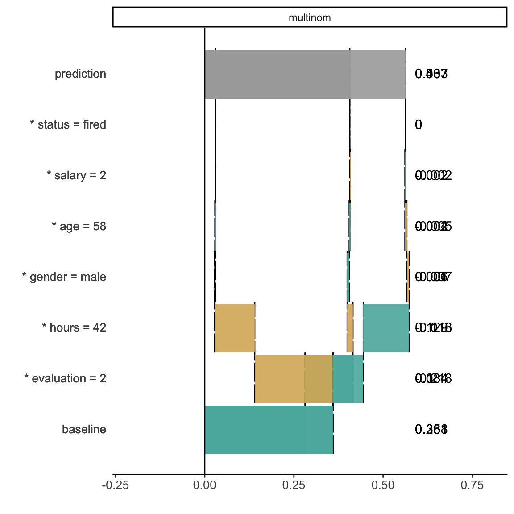
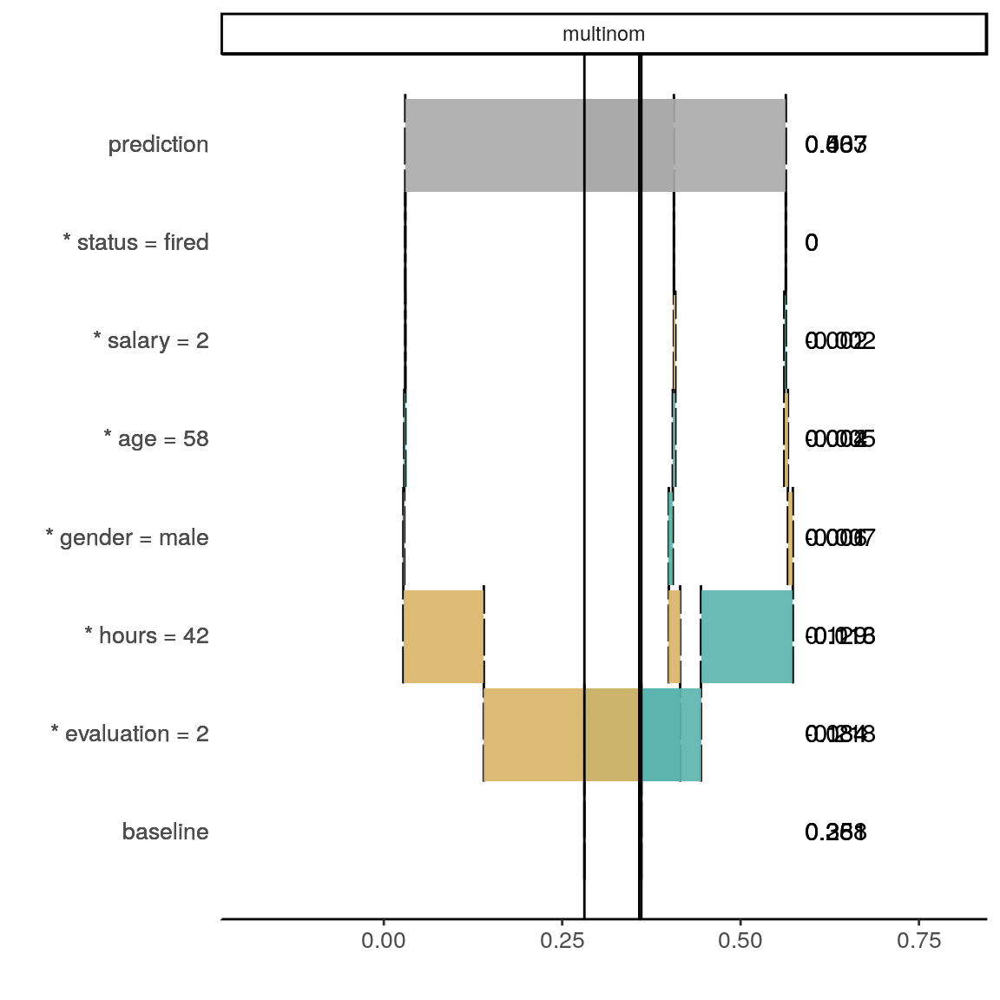
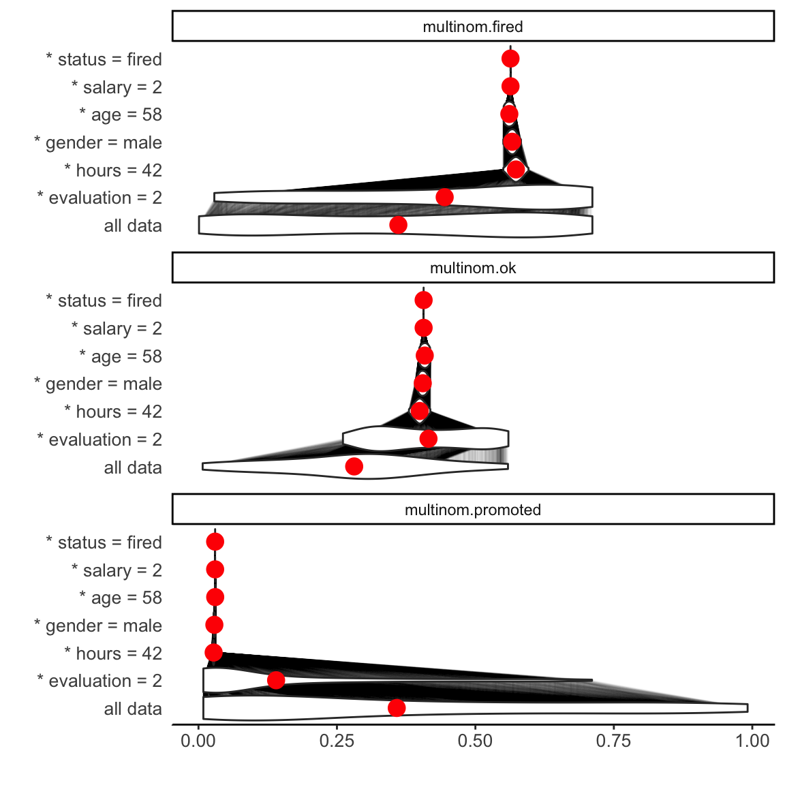
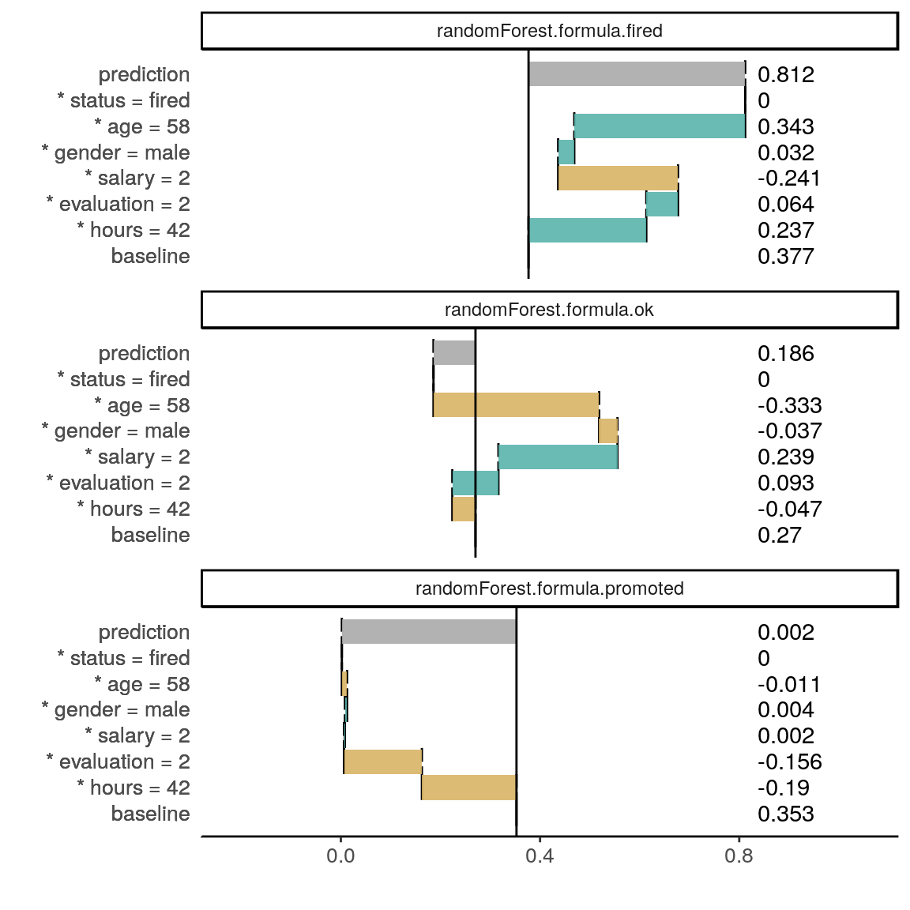
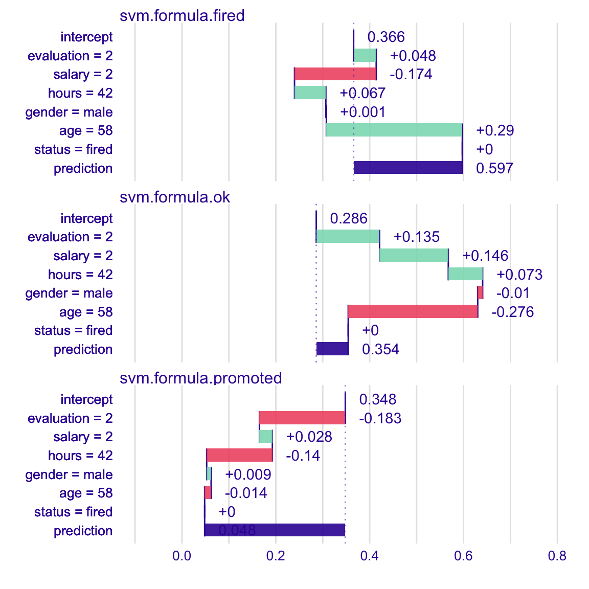
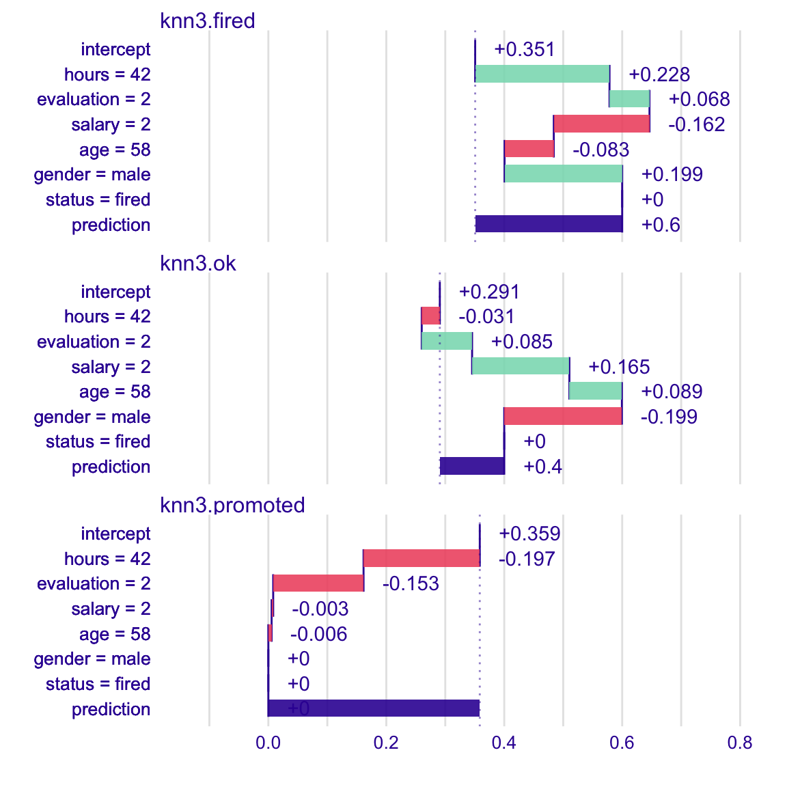

iBreakDown plots for classification models
Dariusz Komosinski
2019-02-28
vignette_breakDown2_classification.RmdHere we will use the HR data to present the iBreakDown package for classification models.
# devtools::install_github("ModelOriented/DALEX")
library(DALEX)
library(ggplot2)
library(iBreakDown)
head(HR)#> gender age hours evaluation salary status
#> 1 male 32.58267 41.88626 3 1 fired
#> 2 female 41.21104 36.34339 2 5 fired
#> 3 male 37.70516 36.81718 3 0 fired
#> 4 female 30.06051 38.96032 3 2 fired
#> 5 male 21.10283 62.15464 5 3 promoted
#> 6 male 40.11812 69.53973 2 0 firednew_observation <- HR_test[1,]
new_observation#> gender age hours evaluation salary status
#> 1 male 57.72683 42.31527 2 2 firedglm
First, we fit a model.
#> # weights: 21 (12 variable)
#> initial value 8620.810629
#> iter 10 value 7002.127738
#> iter 20 value 6239.478146
#> iter 20 value 6239.478126
#> iter 20 value 6239.478124
#> final value 6239.478124
#> convergedTo understand the factors that drive predictions for a single observation we use the iBreakDown package.
However sometimes we need to create our own predict function which returns probalilities.
p_fun <- function(object, newdata){predict(object, newdata=newdata, type="prob")}
# p_fun <- function(object, newdata){
# if (nrow(newdata) == 1) {
# as.data.frame(t(predict(object, newdata, type = "prob")))
# } else {
# as.data.frame(predict(object, newdata=newdata, type="prob"))
# }
# }Now we create an object of the break_down class. If we want to plot distributions of partial predictions, use argument keep_distributions.
bd_glm <- local_attributions(m_glm,
data = HR_test,
new_observation = new_observation,
keep_distributions = TRUE,
predict_function = p_fun)We can simply print the result.
head(bd_glm)#> $variable
#> [1] baseline * evaluation = 2 * hours = 42 * gender = male
#> [5] * age = 58 * salary = 2 * status = fired prediction
#> [9] baseline * evaluation = 2 * hours = 42 * gender = male
#> [13] * age = 58 * salary = 2 * status = fired prediction
#> [17] baseline * evaluation = 2 * hours = 42 * gender = male
#> [21] * age = 58 * salary = 2 * status = fired prediction
#> 8 Levels: * age = 58 * evaluation = 2 * gender = male ... prediction
#>
#> $contribution
#> [1] 0.3608970366 0.0836464487 0.1286468461 -0.0068466573 -0.0050727584
#> [6] 0.0021435835 0.0000000000 0.5634144993 0.2811159833 0.1342029958
#> [11] -0.0158876669 0.0055539713 0.0035640252 -0.0020222182 0.0000000000
#> [16] 0.4065270905 0.3579869801 -0.2178494445 -0.1127591793 0.0012926860
#> [21] 0.0015087332 -0.0001213653 0.0000000000 0.0300584102
#>
#> $variable_name
#> [1] baseline evaluation hours gender age salary
#> [7] status baseline evaluation hours gender
#> [13] age salary status baseline evaluation
#> [19] hours gender age salary status
#> Levels: age baseline evaluation gender hours salary status
#>
#> $variable_value
#> [1] 1 2 42 male 58 2 fired 1 2 42
#> [12] male 58 2 fired 1 2 42 male 58 2
#> [23] fired
#> Levels: 1 2 42 58 fired male
#>
#> $cummulative
#> [1] 0.36089704 0.44454349 0.57319033 0.56634367 0.56127092 0.56341450
#> [7] 0.56341450 0.56341450 0.28111598 0.41531898 0.39943131 0.40498528
#> [13] 0.40854931 0.40652709 0.40652709 0.40652709 0.35798698 0.14013754
#> [19] 0.02737836 0.02867104 0.03017978 0.03005841 0.03005841 0.03005841
#>
#> $sign
#> [1] 1 1 1 -1 -1 1 0 1 1 1 -1 1 1 -1 0 1 1 -1 -1 1 1 -1 0
#> [24] X
#> Levels: -1 0 1 XOr plot the result which is more clear.
plot(bd_glm)
Use the start_baseline argument to set the origin of plots.
plot(bd_glm, start_baseline = TRUE)
Use the plot_distributions argument to see distributions of partial predictions.
plot(bd_glm, plot_distributions = TRUE)
For another type of models we proceed analogously.
randomForest
library(randomForest)
m_rf <- randomForest(status ~ . , data = HR)
p_fun <- function(object, newdata){predict(object, newdata=newdata, type = "prob")}
bd_rf <- local_attributions(m_rf,
data = HR_test,
new_observation = new_observation,
predict_function = p_fun)
bd_rf#> contribution
#> randomForest.formula.fired: baseline 0.377
#> randomForest.formula.fired: * hours = 42 0.237
#> randomForest.formula.fired: * evaluation = 2 0.064
#> randomForest.formula.fired: * salary = 2 -0.241
#> randomForest.formula.fired: * gender = male 0.032
#> randomForest.formula.fired: * age = 58 0.343
#> randomForest.formula.fired: * status = fired 0.000
#> randomForest.formula.fired: prediction 0.812
#> randomForest.formula.ok: baseline 0.270
#> randomForest.formula.ok: * hours = 42 -0.047
#> randomForest.formula.ok: * evaluation = 2 0.093
#> randomForest.formula.ok: * salary = 2 0.239
#> randomForest.formula.ok: * gender = male -0.037
#> randomForest.formula.ok: * age = 58 -0.333
#> randomForest.formula.ok: * status = fired 0.000
#> randomForest.formula.ok: prediction 0.186
#> randomForest.formula.promoted: baseline 0.353
#> randomForest.formula.promoted: * hours = 42 -0.190
#> randomForest.formula.promoted: * evaluation = 2 -0.156
#> randomForest.formula.promoted: * salary = 2 0.002
#> randomForest.formula.promoted: * gender = male 0.004
#> randomForest.formula.promoted: * age = 58 -0.011
#> randomForest.formula.promoted: * status = fired 0.000
#> randomForest.formula.promoted: prediction 0.002
#> baseline: 0plot(bd_rf, start_baseline = TRUE)
SVM
library(e1071)
m_svm <- svm(status ~ . , data = HR, type = "C-classification", probability = TRUE)
p_fun <- function(object, newdata){
p <- predict(object, newdata = newdata, probability = TRUE)
attr(p, "probabilities")
}
bd_svm <- local_attributions(m_svm,
data = HR_test,
new_observation = new_observation,
predict_function = p_fun)
plot(bd_svm, start_baseline = TRUE)
knn
library(caret)
m_knn <- knn3(status ~ . , data = HR, k = 5)
bd_knn <- local_attributions(m_knn,
data = HR_test,
new_observation = new_observation)
plot(bd_knn, start_baseline = TRUE)